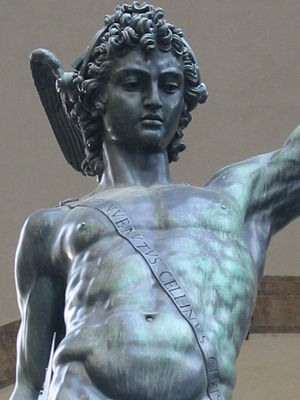

La historia de Grecia es una de las más tempranamente documentadas y estudiadas. Existen fuentes escritas desde el segundo milenio a. C.En la Antigüedad, Grecia , sus pensadores y escritores, su arte y su arquitectura. El país que actualmente se denomina Grecia se conocía antiguamente como Hélade, pero políticamente estaba fragmentado en numerosas polis o ciudades estado independientes entre sí, que unas veces se aliaban y otras se enfrentaban en guerras sangrientas. La civilización griega tuvo un fuerte desarrollo en el campo filosófico. Se le suele considerar la «cuna de la civilización occidental», ya que sus grandes pensadores fueron los que desarrollaron los primeros conceptos de la filosofía entre los que estaba la concepción de la física del átomo (sin división) y su arte, sencillo, se caracterizó por la construcción de templos con grandes pilares y techos a dos aguas; en la música destacaron sus danzas folclóricas y sus cantos se ejecutaban todos los días en todas sus actividades. Entre los monumentos más famosos de esta antigua civilización se encuentran, entre otros, el Partenón, el teatro de Epidauro y el Mausoleo de Halicarnaso.

En la isla de Creta se desarrolló la primera civilización avanzada, la cretense o minoica. Durante su época de mayor esplendor (minoico medio, hacia 1950 a. C. a 1550 a. C.), se construyeron los palacios de Cnosos, Festos y Hagia Triada. Por otro lado, los aqueos o protohelenos se establecieron en la Argólida, donde construyeron las fortalezas de Tirinto y Micenas, de la que derivó el nombre micénica que se da a su elevada civilización, asimiladora de la cultura minoica. Hacia el 1550 a. C. comenzó un período de apogeo a ambos lados del mar Egeo, que culminó con la conquista de Creta. A comienzos del siglo XII a. C., los dorios irrumpieron en la Grecia continental. En consecuencia, los aqueos emigraron al Peloponeso; los jonios al Ática, a Eubea y a las Cícladas, los eolios, Tesalia y a Beocia. Además, esa invasión incrementó el proceso de emigración de colonos griegos hacia el litoral de Asia Menor y provocó la fragmentación de Grecia en ciudades-estado (polis).
La evidencia lingüística muestra que antes del IV milenio a. C., Grecia y los alrededores estuvieron habitados por pueblos que hablaban lenguas no-indoeuropeas. No se conoce con precisión cuándo llegaron los hablantes de lenguas griegas a Grecia, pero se estima que pudo ocurrir hacia el 2000 a. C. Esto sugiere que las primeras civilizaciones atestiguadas en territorio griego, la ciclónica, la egea y la minoica fueron creadas por pueblos que estaban etnolingüística mente emparentados con los griegos. En cambio, en el período micénico la lengua dominante de la mayor parte de áreas parece haber sido una forma de griego, el griego micénico o formas de griego relacionadas con él.
Historia de la Bandera
Esta bandera, que fue adoptada en 1822, recuerda los tradicionales pueblos de casas blancas, con el mar y el cielo azul como telón de fondo. El blanco también simboliza la pureza de la lucha por la independencia de Grecia, que consiguió expulsar de su territorio a los otomanos en 1821. Este el significado de los colores de la bandera de Grecia En el cantón, en la parte superior izquierda de la bandera, se sitúa la cruz, símbolo de la fe cristiana del pueblo heleno, mayoritariamente ortodoxo y practicante. Esta cruz blanca sobre fondo azul fue la bandera nacional entre 1975 y 1978.